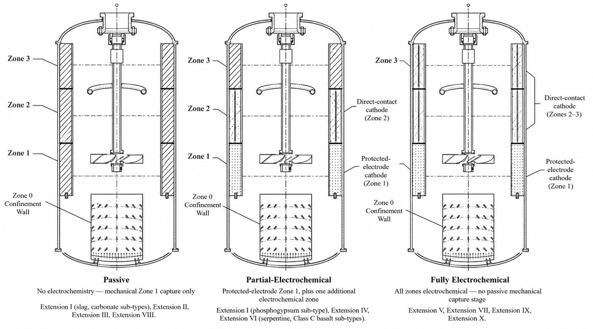
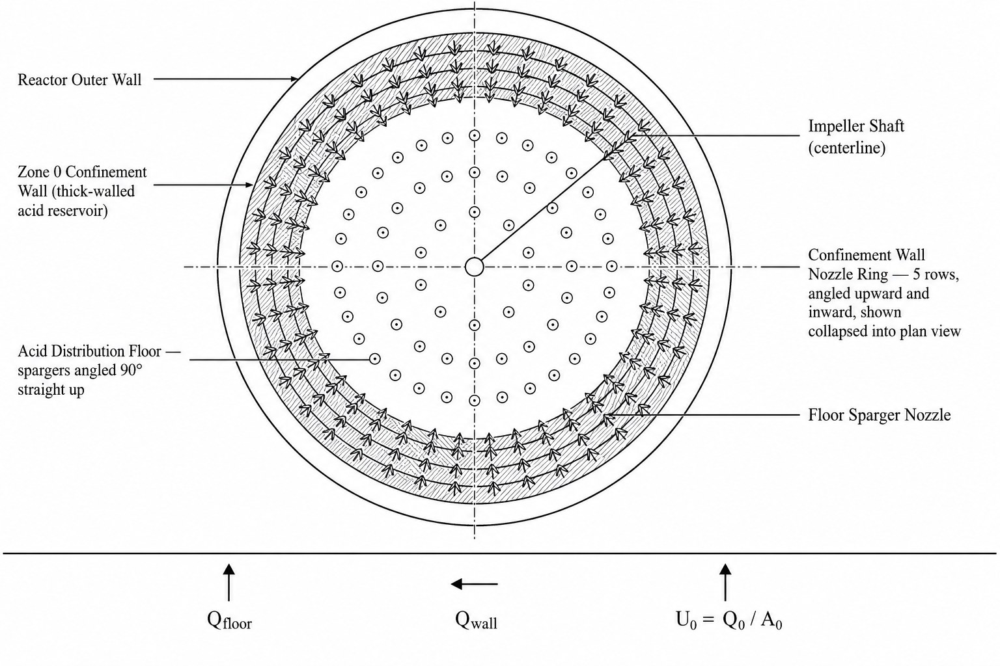

Chemical Engineering · Hamilton College
Available for research work
Figures
Six diagrams tracing the OlivAir reactor from full cutaway down to individual baffle and electrode geometry — the complete visual reference for the platform.
The reactor, figure by figure
These six diagrams are the complete visual documentation for the OlivAir reactor platform — from the full four-zone cutaway down to the rod anode and gas-capture sleeve. Read alongside the OlivAir overview for the mechanisms each one supports.






Want the underlying equations and derivations?
These figures are drawn from OlivAir's ten-part platform paper series and filed U.S. provisional patent application (No. 64/124,248).
Let's build together
Let's talk.
I'm always glad to talk chemistry, carbon removal, or anything OlivAir related.